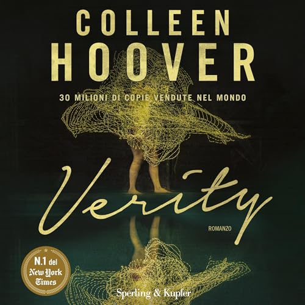
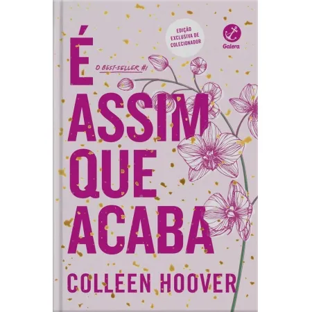

Orgulho e Preconceito - Jane Austen
Elizabeth Bennet enfrenta preconceitos e descobre o amor com o reservado Sr. Darcy.

Persuasão - Jane Austen
Anne Elliot tem uma segunda chance no amor com o Capitão Wentworth.

Como Eu Era Antes de Você - Jojo Moyes
Lou cuida de Will, um homem tetraplégico, e os dois transformam a vida um do outro.

Depois de Você - Jojo Moyes
Lou tenta reconstruir sua vida após a perda de Will.

O Morro dos Ventos Uivantes - Emily Brontë
A paixão destrutiva entre Heathcliff e Catherine em um cenário sombrio.

Poemas de Emily Brontë - Emily Brontë
Versos intensos que refletem o amor e a melancolia da autora.

A Culpa é das Estrelas - John Green
Hazel e Gus, dois jovens com câncer, vivem um amor intenso e comovente.

Cidades de Papel - John Green
Quentin parte em busca de Margo, sua paixão misteriosa.

Anna Karenina - Liev Tolstói
Anna desafia convenções sociais por um amor proibido na Rússia czarista.

A Morte de Ivan Iliitch - Liev Tolstói
Um juiz reflete sobre amor e vida ao enfrentar a morte.

Um Amor para Recordar - Nicholas Sparks
Landon e Jamie encontram amor e redenção em uma história emocionante.

O Diário de uma Paixão - Nicholas Sparks
Noah e Allie vivem um amor eterno, relembrado em um diário comovente.

Jane Eyre - Charlotte Brontë
Jane, uma órfã resiliente, encontra amor e independência com Rochester.

Shirley - Charlotte Brontë
Duas mulheres navegam amor e sociedade na Inglaterra industrial.

Amor & Gelato - Jenna Evans Welch
Lina explora a Itália, amor e segredos de família após a morte da mãe.

Amor & Sorte - Jenna Evans Welch
Addie encontra amor e aventura em uma viagem pela Irlanda.

Verity - Colleen Hoover
Lowen descobre segredos sombrios ao terminar o livro de uma autora.

É Assim que Acaba - Colleen Hoover
Lily enfrenta escolhas difíceis em um amor complicado.

Apenas Ouça - Sarah Dessen
Annabel encontra amor e cura através da música.
Uma Canção de Ninar - Sarah Dessen
Remy aprende a confiar no amor apesar de seu cinismo.